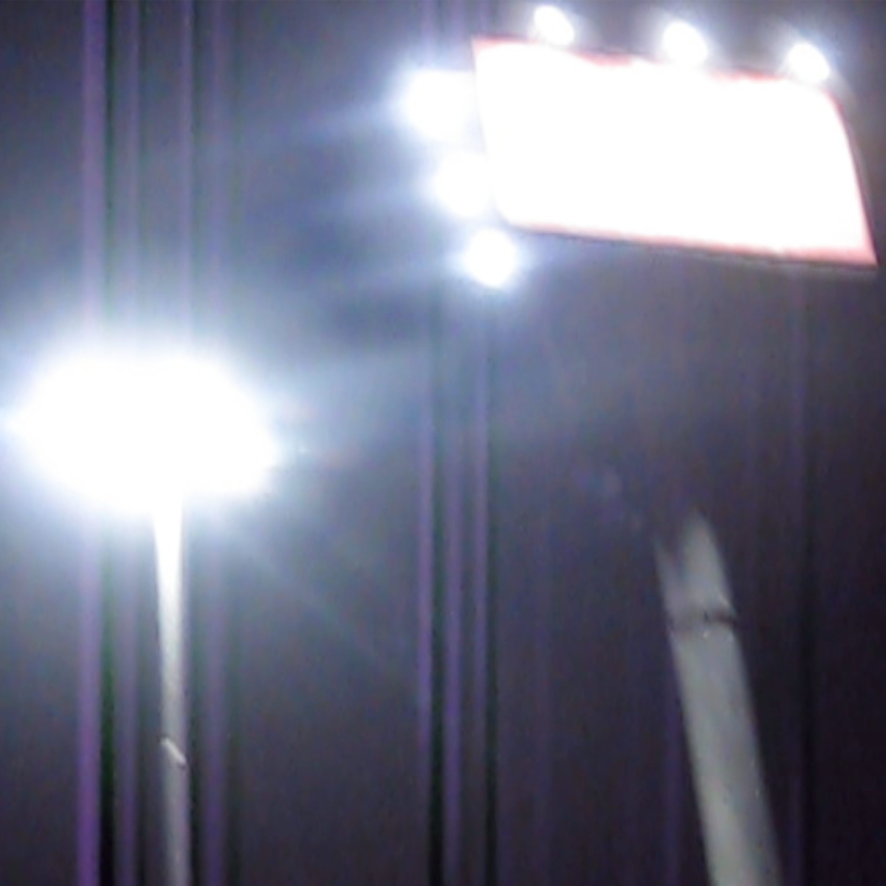

On February 4th, Kruvenvrag release their debut single “Gun and the Flag.” The track takes half-made-up memories, wind cutting through an empty parking lot, and a warm Sofia night and wraps them in an African country’s colorful flag.
It’s noisy and angry while tender. It feels like a love poem that someone spills watercolor water on midway through. A song that sounds finished only when listened to during the right type of spring night.
